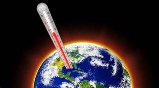
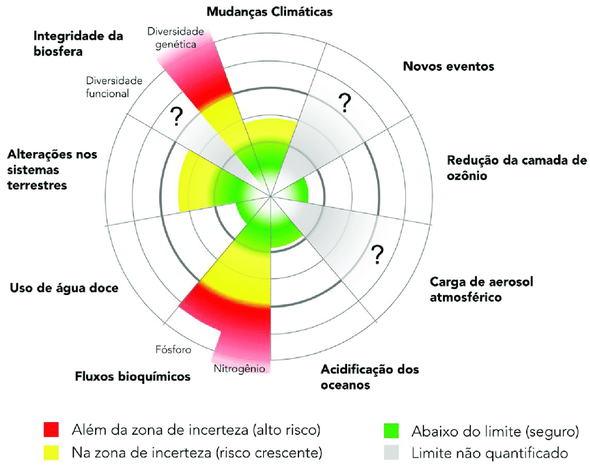

O que será abordado
- Mudança Climática e ação humana
- Os limites planetários
Mudança Climática
A partir de os anos 1970, avanços da ciência e maiores preocupações ecológicas trouxeram à tona a constatação de que o clima da Terra estava mudando, que ele está aquecendo e isso traz imensos riscos à sobrevivência da humanidade e de ecossistemas agora e no futuro. Uma constatação ainda mais assombrosa, mas não surpreendente é que a ação humana de emissão de gases efeito estufa por poluição, desmatamento, pecuária intensiva e queima de combustíveis fósseis é o que vem contribuindo para o planeta armazenar mais calor e ter seu clima alterado.
Vale lembrar que nem todos os seres humanos emitem gases efeito estufa da mesma forma e muito menos são igualmente afetados pelas mudanças climáticas, a OXFAM em 2020 revelou que o 1% mais rico da população mundial emite o dobro de CO2 da metade mais pobre, e justamente as populações mais pobres são as mais afetadas pelas mudanças climáticas, que tendem a empurrar cada vez mais pessoas para a pobreza e vida em condições de escassez de água, alimentos e ambiente salubre.
Limites Planetários
Uma definição científica ambiental recente é a dos Limites Planetários, condições da Terra que não devem ser ultrapassadas para que não haja risco de desequilíbrio extremo dos ecossistemas, ciclos e vida humana. A humanidade deve operar dentro desses limites para que seja possível um desenvolvimento sustentável. Há nove limites planetários que aqui serão descritos: Mudança Climática, Mudança de Uso da Terra, Uso de água, Novas Entidades/Poluição, Integridade da Biosfera, Ciclos Biogeoquímicos, Degradação da Camada de Ozônio, Acidificação dos Oceanos e Aerosóis na Atmosfera.
A estabilidade dos ciclos biogeoquímicos está sendo afetada pela mineração, agroindústria e uso de fertilizantes artificiais, colocando em perigo a qualidade natural dos solos e a ciclagem de nutrientes. O uso de água doce em excesso torna-se preocupante conforme a mudança climática e a poluição acirram a escassez hídrica em certas regiões do planeta. As mudanças de uso da terra são preocupantes à medida que habitats naturais vão sendo perdidos e solos vão sendo degradados, e restam poucas fronteiras de alteração, como as essenciais florestas equatoriais do mundo, cuja destruição para fins agropecuários arrisca a biodiversidade, o ciclo da água, a estabilidade climática e as microdinâmicas do solo, pondo em risco permanente a persistência do bioma. A degradação da camada de ozônio põe em risco a estabilidade genética da vida por expor a Terra a radiações em quantidade perigosa e promover maior derretimento de geleiras. A poluição por compostos sintéticos e novas entidades despejadas em ecossistemas prejudica o equilíbrio ecológico ao introduzir contaminantes e tóxicos no ambiente e promovendo bioacumulação. A extinção de espécies ameaça a integridade da biosfera e o equilíbrio geral dos ecossistemas devido à ruptura de relações ecológicas essenciais. A acidificação dos oceanos vem crescendo junto com o efeito estufa, e prejudica a vida marinha como um todo e por conseguinte a sustentação humana e a geração de oxigênio pelas algas. Ao lado segue a preocupante situação da humanidade quanto aos limites planetários, dos quais dois já foram ultrapassados e quatro estão em zonas de incerteza.
Projeto Angelim Vermelho | Desenvolvido por Maria Eduarda Ferreira Rodrigues e Sabrina da Paz Alves | Fundação Matias Machline - 2021